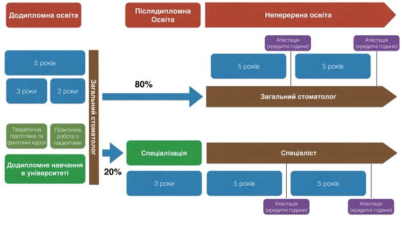

Точка зору · журнал «ДентАрт» 2015 №1 (78)
Концепція реформи підготовки лікарів-стоматологів України
Сьогодні, у складний час для Української держави, коли ми, по суті, проходимо своє становлення та намагаємось реформувати практично всі сфери життя, значних змін потребує і медицина. В аспекті підписання Угоди про Асоціацію з Євросоюзом, а також як ряд незалежних ініціатив, протягом останнього року було зроблено низку кроків у напрямку реформування системи охорони здоров'я та підготовки лікарів в Україні.
Так, у липні 2014 року за ініціативою МОЗ України було створено Стратегічну дорадчу групу з питань реформування охорони здоров'я, яка запропонувала Національну стратегію побудови нової системи охорони здоров'я в Україні на період 2015-2025 рр. Ця стратегія передбачає реформування системи медичної освіти та системи охорони здоров'я у відповідності зі стандартами, прийнятими у розвинутих країнах світу. Ми вважаємо, що впровадження цієї системи буде значним кроком уперед для української медицини. Однак запропонована стратегія має певну контраверсійність зі стоматологією, яка є окремою дисципліною та самоврядною спеціальністю у більшості країн світу. Контраверсійні питання стосуються, зокрема, післядипломної підготовки лікарів. Одна зі схем, що значною мірою відображає запропоновану реформу, була представлена під час Всеукраїнської науково-практичної відеоконференції «Післядипломна освіта та лікарське самоврядування за європейськими стандартами», проведеної у Тернополі 11-12 вересня 2014 року (рис. 1).
Згідно з цією схемою, обов'язкова підготовка лікарів включає додипломну освіту (6 років), інтернатуру (2-3 роки) та резидентуру (2 роки), після якої лікар отримує статус вузького спеціаліста. На нашу думку, стратегія могла б бути адаптована лише до щелепно-лицьової хірургії, яка на сьогодні в Україні є стоматологічною дисципліною, хоча у більшості розвинутих країн світу належить до медицини.
В українському законодавстві стоматологія розглядається як частина медицини. Відповідно, усі зміни, які плануються в галузі загальної медицини, автоматично екстраполюються на стоматологію, і дуже часто без урахування інтересів цієї галузі.
Але у багатьох країнах світу стоматологія розглядається як самоврядна спеціальність. Так, у своїх директивах Єврокомісія чітко виокремлює такі галузі: медицина; стоматологія; фармакологія; організація та менеджмент охорони здоров'я; спеціальності середньої медичної освіти; ветеринарія.
Ми вважаємо, що автоматичне перенесення реформ не буде відображати специфіку цієї галузі. Натомість вважаємо за доцільне виділення стоматології як окремої, самоврядної галузі медицини.
Цю думку висловили Павленко О.В. та Вахненко О.М., 2013: стоматологічна служба має свої особливості, відмінні від інших медичних спеціальностей, і фактично функціонує як окрема підгалузь охорони здоров'я, що відповідає практиці більшості європейських країн. Відтак автори запропонували внести відповідні зміни до Закону України «Про внесення змін до Основ законодавства України про охорону здоров'я», а саме виділити стоматологічну допомогу в окремий вид медичної допомоги.
Ми провели ретельний аналіз принципів підготовки лікарів-стоматологів в Україні, а також проаналізували основні засади підготовки стоматологів у розвинутих країнах Євросоюзу та Сполучених Штатах Америки, базуючись на Директивах Єврокомісії, рекомендаціях та протоколах Асоціації Стоматологічної Освіти в Європі. У цій статті пропонуємо порівняльну характеристику навчання лікарів-стоматологів та подаємо наші пропозиції щодо реформування галузі.
Згідно з даними Асоціації Стоматологічної Освіти в Європі (ADEE, Association for Dental Education in Europe), освіта лікаря-стоматолога складається з трьох компонентів: 1) додипломна освіта; 2) післядипломна освіта; 3) неперервна освіта.
1. Додипломна освіта
В Україні додипломна освіта де-юре триває 5 років. Однак диплом лікаря-стоматолога, який отримує студент після завершення ВНЗ, не забезпечує можливості здійснення практичної діяльності лікаря-стоматолога. Для того, щоб здобути це право, необхідно завершити обов'язкове післядипломне навчання — інтернатуру — в установах, затверджених МОЗ України.
До 2005 року, згідно з наказом МОЗ України №104 від 20.06.1994 року, спеціалізація (інтернатура) була обов'язковою формою післядипломної підготовки випускників усіх факультетів медичних і фармацевтичних вищих навчальних закладів, після закінчення якої їм присвоювалася кваліфікація лікаря/провізора — спеціаліста певного фаху. Випускники стоматологічних факультетів навчалися в інтернатурі 1,5 року зі спеціальностей «стоматологія», «стоматологія ортопедична» та «ортодонтія», тоді як термін навчання в інтернатурі з інших спеціальностей становив 1 рік.
Однак наказом МОЗ України від 23.02.2005 № 81 «Про затвердження Переліку спеціальностей та строки навчання в інтернатурі випускників медичних і фармацевтичних вищих навчальних закладів, медичних факультетів університетів» було змінено тривалість проходження інтернатури для лікарів-стоматологів до двох років, а також відмінено можливість отримання статусу вузького спеціаліста протягом інтернатури. Таким чином, проходження інтернатури є обов'язковим компонентом підготовки лікаря-стоматолога, без якої здійснення клінічної практики неможливе. Отже, де-факто стоматологічна освіта в Україні, яка передбачає отримання звання загального стоматолога (без вузької спеціалізації), триває 7 років.

Рис. 1. Нова структура системи післядипломної освіти лікарів, запропонована на Всеукраїнській науково-практичній відеоконференції «Післядипломна освіта та лікарське самоврядування за європейськими стандартами».
Окремої уваги заслуговує також питання якості практичної підготовки лікарів-стоматологів. Так, в неопублікованому опитуванні понад 700 студентів із 20-ти стоматологічних факультетів України, проведеному Асоціацією студентів-стоматологів України, на запитання «Скільки пацієнтів ви прийняли під час занять/практики», 266 (38%) респондентів відповіли, що жодного. А серед опитаних, які все-таки працювали з пацієнтами, лише невелика частина — 122 (17%) прийняли понад 10 пацієнтів (рис. 2).
| Скільки пацієнтів прийняли під час занять/практики? | ||
|---|---|---|
| Кількість пацієнтів | Респондентів | Частка |
| 0 | 266 | 38% |
| 1-4 | 229 | 32% |
| 5-10 | 86 | 12% |
| Більше 10 | 122 | 17% |
У більшості розвинутих країн світу додипломна освіта передбачає інтенсивну клінічну роботу протягом 2-х останніх років навчання під наглядом викладачів/інструкторів. У багатьох вузах обов'язковим є виконання певної мінімальної кількості маніпуляцій з усіх галузей стоматології.
Щодо інтернатури, то її немає у більшості країн (за винятком хіба що примусової інтернатури в Єгипті, Тайвані, Індії та ряді інших країн). Отримання клінічних умінь передбачається протягом двох останніх курсів додипломної освіти. До речі, у Польщі, одній з країн колишнього соціалістичного табору, з 2015 року інтернатуру відмінено, а до 70-х років ХХ століття медична освіта в СРСР взагалі не передбачала проходження інтернатури.
Для прикладу можна розглянути систему підготовки лікарів-стоматологів у Швейцарії (Guidelines by Swiss Federal Office of Public Health, 2006). Згідно зі стандартами Швейцарської стоматологічної асоціації та Швейцарського федерального офісу публічного здоров'я, додипломна підготовка лікаря-стоматолога триває 5 років і передбачає отримання швейцарського стоматологічного диплома. Цей диплом дозволяє здійснювати практичну діяльність у власному стоматологічному кабінеті по всій Швейцарській Федерації, тобто, по суті, видається ліцензія на здійснення клінічної практики. Після цього за власним бажанням лікар може вступити на післядипломну програму (тривалість 3-4 роки) і отримати статус спеціаліста (у Швейцарії — ортодонт або хірург-стоматолог) або ж завершити окрему навчальну післядипломну програму, яка дасть можливість надавати стоматологічну допомогу пацієнтам у співпраці зі страховими компаніями. Післядипломні навчальні програми розробляються та координуються у співпраці зі Швейцарською Стоматологічною Асоціацією і реалізуються на базі стоматологічних університетів/факультетів.
Пропозиції щодо реформування додипломної стоматологічної освіти:
- оптимізація клінічної підготовки студентів у рамках додипломної освіти;
- основою навчання на 4-му та 5-му курсах повинна стати клінічна робота студентів під керівництвом викладачів на базі університетських клінік;
- скорочення тривалості інтернатури до одного року з правом працювати лікарем-інтерном або її повна відміна.
2. Післядипломна освіта
Спеціалізація у вузькому напрямку, яка провадиться на кафедрах післядипломної освіти, триває від 4 до 10 місяців і необхідна для отримання права виконувати певні види маніпуляцій (хірургія, ортопедія тощо). Більшість програм не відповідають сучасним стандартам післядипломної освіти, не дають належної теоретичної підготовки та клінічної практики.
Наказ МОЗ України №121 від 14.02.2012 «Про внесення Змін до Довідника кваліфікаційних характеристик професійних працівників. Випуск 78 «Охорона здоров'я»» чітко визначає перелік знань та умінь, якими повинен володіти спеціаліст. Таким чином, вузька спеціалізація стає необхідною для законодавчої можливості виконувати певні маніпуляції. Так, наприклад, для того, щоб проводити амбулаторне оперативне втручання — імплантацію з кістковою аугментацію альвеолярного відростка, лікар-стоматолог повинен пройти спеціалізацію з хірургії та, більше того, мати щонайменше І Кваліфікаційну категорію, яка у свою чергу вимагає 7 років стажу. Така практика, тобто система категорій, є пережитком минулого, і її немає в жодній країні світу, окрім країн колишнього СРСР.
Якщо говорити про країни Євросоюзу та США, а також про такі розвинуті країни, як Австралія, Сингапур, Гонконг та ін., то більшість програм підготовки вузьких спеціалістів передбачають проходження 3-річних full-time (тобто з повною зайнятістю студента) програм при університетах.
За даними Американської Стоматологічної Асоціації (2011), серед усіх стоматологів у США вузькими спеціалістами є лише 21%. Інші 79% стоматологів — загальні стоматологи (general dentists), і цей диплом дозволяє їм здійснювати будь-які маніпуляції без жодних обмежень відразу після закінчення університету.
Пропозиції щодо реформування післядипломної стоматологічної освіти:
- реформування та оптимізація системи післядипломної освіти;
- після отримання диплома лікар-стоматолог може виконувати свої обов'язки в межах компетентності загального стоматолога пожиттєво;
- поступове збільшення тривалості післядипломних програм спеціалізації (до 3-х років), а також збільшення їх вартості. Це дозволить зменшити кількість студентів та підвищити якість цих програм;
- спеціалізація має бути добровільною і надавати право отримання статусу вузького спеціаліста у певній галузі.
3. Неперервна освіта
Неперервна стоматологічна освіта — це механізм, за допомогою якого лікарі-стоматологи вдосконалюють свої знання та вміння і дотримуються сучасних стандартів клінічної практики. В Україні існує система обов'язкової атестації лікарів-стоматологів кожні 5 років, яка проводиться виключно на кафедрах післядипломної освіти. При цьому на курсах підвищення кваліфікації лікарям присвоюються лікарські категорії, які є пережитком минулого.
В Європі та США поняття категорій немає. Згідно з Schleyer та співавт., 2002, у більшості країн неперервна освіта забезпечується різними установами, зокрема університетами, стоматологічними асоціаціями, компаніями-виробниками чи торговими представниками, інститутами та окремо взятими спеціалістами.
Для прикладу, у США при Асоціації Стоматологів (ADA) існує комітет у складі 16-ти осіб, який розглядає заявки та видає дозволи різним установам на право займатися неперервною освітою. Станом на 2013 рік ліцензію на здійснення навчальної діяльності та видачу кредитних балів для неперервної освіти стоматологів мали 437 установ.
| Назва установи | Кількість |
|---|---|
| Навчальна стоматологічна компанія | 105 |
| Професійна спільнота/стоматологічна асоціація | 68 |
| Стоматологічний університет | 45 |
| Професійна спільнота ADA (на державному рівні) | 34 |
| Компанії-виробники стоматологічних матеріалів, обладнання, інструментів чи фармацевтичних виробів | 31 |
| Коледж/університет | 27 |
| Навчальний клуб | 22 |
| Консалтингова компанія | 16 |
| Професійна спільнота ADA (на локальному рівні) | 14 |
| Лікарня, госпіталь | 13 |
| Комунікаційна/видавнича компанія | 9 |
| Страхова компанія | 7 |
| Федеральна агенція | 7 |
| Інші | 39 |
| Всього | 437 |
У ряді країн (Бельгія, Франція, Чехія, Велика Британія та ін.) для лікарів обов'язковим є підтримання професійного рівня шляхом відвідування курсів, лекцій і т.д., за які нараховуються кредитні години (CEU). На основі підрахунку суми кредитних годин провадиться ліцензування лікаря-стоматолога на подальшу практику. В інших країнах (Австрія, Кіпр, Фінляндія, Ісландія, Нідерланди) таке підвищення кваліфікації необов'язкове і покладається на бажання та сумління лікаря-стоматолога. Так, наприклад, у Швейцарії неперервна освіта є обов'язковою і має становити в середньому 80 годин навчання на рік, з яких 30 годин нараховуються автоматично як самовдосконалення. Інші 50 годин мають бути використані на відвідування наукових або практичних конференцій, курсів, лекцій, семінарів тощо. Щороку Швейцарська Стоматологічна Асоціація надсилає запити 10% стоматологів для перевірки їхніх сертифікатів.
Окрім того, в жодній із розвинутих країн світу ми не знайшли окремої установи, яка б займалася лише післядипломною освітою.
Пропозиції щодо реформування неперервної освіти стоматологів:
- скасування атестаційних категорій та обов'язкової атестації в державних установах кожні 5 років;
- безперервну освіту здійснювати шляхом нарахування кредитних балів;
- неперервне навчання з присвоєнням курсантам кредитних годин можуть провадити як державні установи, так і приватні навчальні центри, сертифіковані Асоціацією стоматологів України;
- електронний облік «кредитних годин», отриманих лікарем на освітніх та навчальних програмах, відбувається шляхом автоматичного внесення в єдиний реєстр. За кількістю набраних «кредитних годин» автоматично підтверджується право здійснювати практичну діяльність.
Вважаємо, що виділення стоматології як самоврядної дисципліни та впровадження запропонованих нами змін сприятиме розвитку галузі у відповідності до світових стандартів. Зважаючи на те, що сьогодні стоматологія має високорозвинутий приватний сектор і більшою мірою сучасні стандарти лікування реалізовані у приватній практиці, реформування стоматології може стати одним із пілотних проектів реформування медицини загалом.
Вважаємо також, що Асоціація стоматологів України як основна профільна асоціація повинна очолити ініціативи, пов'язані з реформуванням галузі.
Література
- Шляхи реформування системи надання стоматологічної допомоги населенню України. Дискусія / Павленко О. В., Вахненко О. М. // Современная стоматология. — 2013. — № 4. — С. 180-184.
- Волосовець О.П., Вдовиченко Ю.П., Булах І.Є., Краснов В.В., П'ятницький Ю.С. Проблемні питання впровадження лікарської резидентури в Україні // Матеріали Всеукраїнської науково-практичної відео-конференції «Післядипломна освіта та лікарське самоврядування за європейськими стандартами» 11-12 вересня 2014 року. — Тернопіль, ТДМУ, «Укрмедкнига», 2014.
- Павленко О. В. Запровадження міжнародних стандартів якості післядипломної підготовки лікарів-стоматологів / Павленко О. В., Мазур І. П., Ступницька О. М. — С.142-144.
- Наказ МОЗ України від 23.02.2005 № 81 «Про затвердження Переліку спеціальностей та строки навчання в інтернатурі випускників медичних і фармацевтичних вищих навчальних закладів, медичних факультетів університетів».
- Наказ МОЗ України від 19.09.1996 № 291 «Про затвердження Положення про спеціалізацію (інтернатуру) випускників вищих медичних і фармацевтичних закладів освіти III-IV рівня акредитації медичних факультетів університетів».
- Наказ МОЗ України №121 від 14.02.2012 «Про внесення Змін до Довідника кваліфікаційних характеристик професійних працівників. Випуск 78 «Охорона здоров'я»».
- Наказ МОЗ України від 24.07.2014 №522 «Про організацію роботи стратегічної дорадчої групи з питань реформування системи охорони здоров'я України».
- Schleyer T, Eaton K, Mock D, Barac'h V. Comparison of dental licensure, specialization and continuing education in five countries // Eur J Dental Educ 2002: 6: Р. 153–161.
- Undergraduate training. Postgraduate training for dentists in Switzerland Continuing education. Guidelines by Swiss Federal Office of Public Health, 2006.
- American Dental Association. (2011a). 2011 American Dental Association Dental Workforce Model: 2009-2030. Chicago: American Dental Association, Health Policy Resources Center. American Dental Association. (2011b).
- E. Barnes, A. D. Bullock, S. E. R. Bailey, J. G. Cowpe and T. Karaharju-Suvanto. A review of continuing professional development for dentists in Europe // Eur J Dental Educ 2012: 16: Р. 166-178.
- European Commission. Advisory Committee on the Training of Dental Practitioners. Report and recommendation concerning clinical proficiencies required for the practice of dentistry in the European Union. Directorate General XV (XV/E/8316/7/93-EN). Brussels: European Comission, 1996.
- American Dental Association Continuing Education Recognition Program. Recognition Standards and Procedures. Chicago: ADA, 2010.
- Svec TA. The need for continuing education in dentistry // Am J Dent 1993: 6: Р. 318–319.